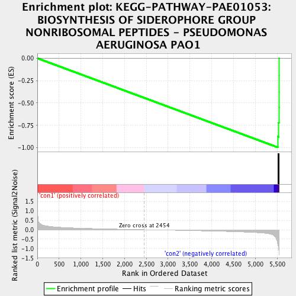
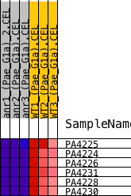
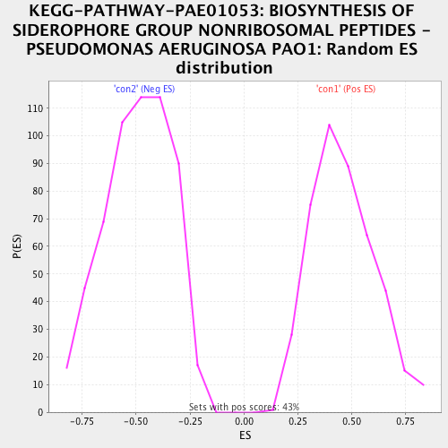

| | | Dataset | Anr_gene.AnrvsWT.cls#con1_versus_con2 |
| Phenotype | AnrvsWT.cls#con1_versus_con2 |
| Upregulated in class | con2 |
| GeneSet | KEGG-PATHWAY-PAE01053: BIOSYNTHESIS OF SIDEROPHORE GROUP NONRIBOSOMAL PEPTIDES - PSEUDOMONAS AERUGINOSA PAO1 |
| Enrichment Score (ES) | -0.9954898 |
| Normalized Enrichment Score (NES) | -2.026031 |
| Nominal p-value | 0.0 |
| FDR q-value | 0.0011270447 |
| FWER p-Value | 0.004 |
Table: GSEA Results Summary

Fig 1: Enrichment plot: KEGG-PATHWAY-PAE01053: BIOSYNTHESIS OF SIDEROPHORE GROUP NONRIBOSOMAL PEPTIDES - PSEUDOMONAS AERUGINOSA PAO1
Profile of the Running ES Score & Positions of GeneSet Members on the Rank Ordered List
| PROBE | DESCRIPTION
(from dataset) | GENE SYMBOL | GENE_TITLE | RANK IN GENE LIST | RANK METRIC SCORE | RUNNING ES | CORE ENRICHMENT | | 1 | PA4225 | na | | | 5518 | -0.779 | -0.8752 | Yes |
| 2 | PA4224 | na | | | 5538 | -1.020 | -0.7211 | Yes |
| 3 | PA4226 | na | | | 5543 | -1.102 | -0.5515 | Yes |
| 4 | PA4231 | na | | | 5545 | -1.138 | -0.3758 | Yes |
| 5 | PA4228 | na | | | 5546 | -1.197 | -0.1909 | Yes |
| 6 | PA4230 | na | | | 5547 | -1.237 | 0.0002 | Yes |
Table: GSEA details [plain text format]

Fig 2: KEGG-PATHWAY-PAE01053: BIOSYNTHESIS OF SIDEROPHORE GROUP NONRIBOSOMAL PEPTIDES - PSEUDOMONAS AERUGINOSA PAO1
Blue-Pink O' Gram in the Space of the Analyzed GeneSet

Fig 3: KEGG-PATHWAY-PAE01053: BIOSYNTHESIS OF SIDEROPHORE GROUP NONRIBOSOMAL PEPTIDES - PSEUDOMONAS AERUGINOSA PAO1: Random ES distribution
Gene set null distribution of ES for KEGG-PATHWAY-PAE01053: BIOSYNTHESIS OF SIDEROPHORE GROUP NONRIBOSOMAL PEPTIDES - PSEUDOMONAS AERUGINOSA PAO1